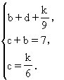
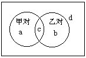
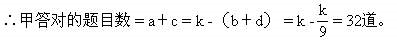

习题十二解答
1．因至少会游泳或体操的人数有50-15＝35（人）。答：既会游泳又会体操的人数=27+18-35=10（人）。
2．设A=｛在1～1000的自然数中能被2整除的数｝，
B=｛在1～1000的自然数中能被3整除的数｝，
C=｛在1～1000的自然数中能被5整除的数｝，
则｜A｜=500，｜B｜=333，｜C｜=200，
｜A∩B｜=166，｜B∩C｜=66，
｜A∩C｜=100，｜A∩B∩C｜=33，
∴｜A∪B∪C｜=500＋333＋200-166-66-100＋33=734（个），
100-734＝266（个）。
答：在1～1000的自然数中不能被2、3、5中任何一个数整除的数共266个。
3.答：五个圆环总面积是5×π×（52-42）=5×9×π＝141.4（平方厘米）（π取3.14），根据容斥原理，阴影面积=141.4-122.5＝18.9（平方厘米）。答：每个小曲边四边形的面积为18.9÷8=2.36（平方厘米）。
4.答：（17＋18＋15）-（6＋6＋6）＋2＋4=38（人）.答：全班共38人。
5.至少答对A题或B题中一题的人数为100-10=90人.∴两题都对的人数=75＋83-90=68（人）。
6.答：设共有k道题.a、b、c、d如下图所示.依题意列方程：


注意a、b、c、d均为自然数或零，可解出k=36。

答：甲答对32道题.